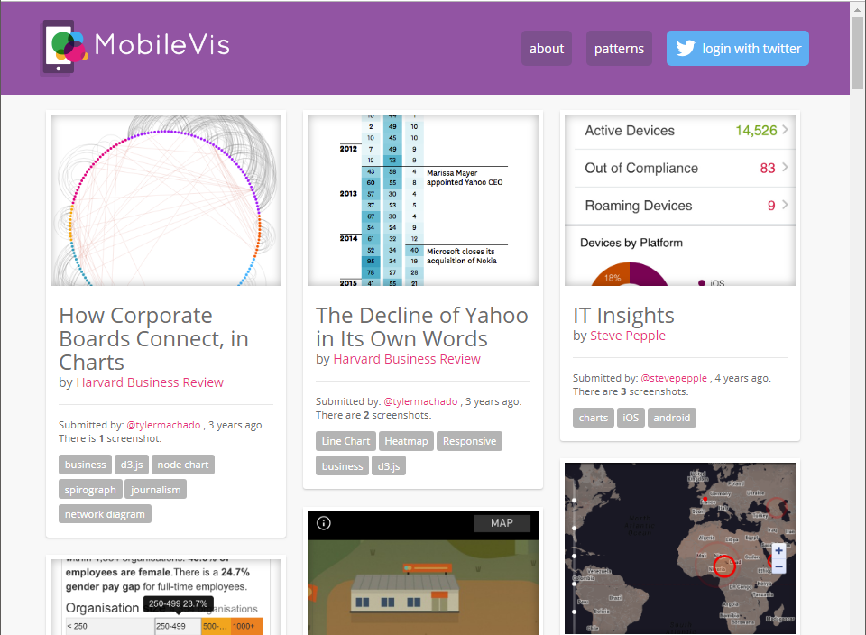
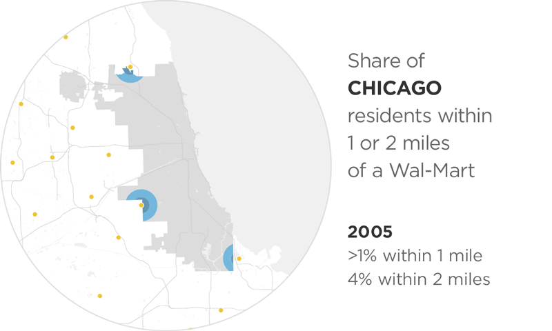
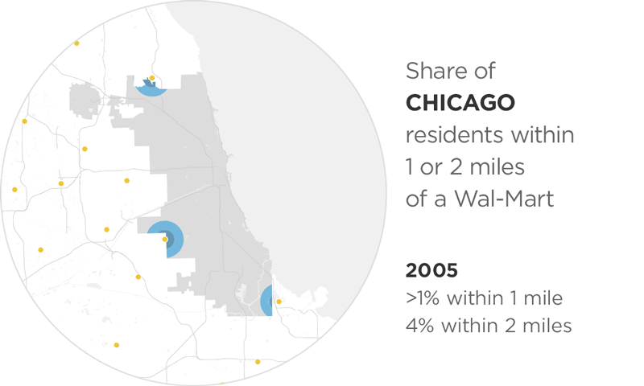

Visualizing Quantities & Events Over Time
From Analysis to Communication, For Displays Both Large & Small
Matthew Brehmer · InfoVis + HCI Researcher · mattbrehmer.github.io
Presentation at Chatham Labs 2019-04-25 · slides: mattbrehmer.github.io/talks/chatham190425
Outline
· My background, methods, & inspiration
· A time series visualization client project
· Expressive information design with timelines
· Visualizing time-oriented data on mobile devices
· Current research interests
My Background
2016 - 2019: Postdoctoral Researcher specializing in InfoVis + HCI, Microsoft Research
2011 - 2016: PhD Computer Science specializing in Information Visualization, UBC
2009 - 2011: MSc Computer Science specializing in Human-Computer Interaction, UBC
2004 - 2009: Bachelor of Computing specializing in Cognitive Science, Queen's Univ.
Scope of My PhD & Postdoc Research
Visualization task analysis:
· A Typology of Abstract Visualization Tasks - TVCG 13 | Visualizing Dimensionally-Reduced Data - BELIV 14
Evaluating visualization (tools):
· Data-Driven Stories - DDS 18 | Visualization Authoring Systems - BELIV 18 | Variants of Multi-Series Bar Charts - CHI 18 |
· Overview: A Document Mining Tool for Journalists - TVCG 14 | Pre-Design Empiricism for Visualization - BELIV 14
Time series visualization:
· Workflows for Energy Portfolio Analysis - TVCG 16
Considerations & tools for expressive information design:
· Timeline Storyteller - C+J 19 | DataToon - CHI 19 | Charticulator - TVCG 19 | ChartAccent - PVIS 17 | Timelines Revisited - TVCG 17 | TimeLineCurator - TVCG 16
Visualizing time-oriented data on mobile devices:
· Ranges Over Time - TVCG 19 | Animation vs. Small Multiples - in review | Novel Interactions with Time-Oriented Data on Mobile Devices - in preparation
Scope of My PhD & Postdoc Research
Visualization task analysis:
· A Typology of Abstract Visualization Tasks - TVCG 13 | Visualizing Dimensionally-Reduced Data - BELIV 14
Evaluating visualization (tools):
· Data-Driven Stories - DDS 18 | Visualization Authoring Systems - BELIV 18 | Variants of Multi-Series Bar Charts - CHI 18 |
· Overview: A Document Mining Tool for Journalists - TVCG 14 | Pre-Design Empiricism for Visualization - BELIV 14
Time series visualization:
· Workflows for Energy Portfolio Analysis - TVCG 16
Considerations & tools for expressive information design:
· Timeline Storyteller - C+J 19 | DataToon - CHI 19 | Charticulator - TVCG 19 | ChartAccent - PVIS 17 | Timelines Revisited - TVCG 17 | TimeLineCurator - TVCG 16
Visualizing time-oriented data on mobile devices:
· Ranges Over Time - TVCG 19 | Animation vs. Small Multiples - in review | Novel Interactions with Time-Oriented Data on Mobile Devices - in preparation
Design & Research Methods
Design & Implementation:
· User interface design | Visualization design & development
Qualitative Research:
· Visualization design studies (client projects) | Requirements analysis | Retrospective interviews
· Chauffeured demos | Think-aloud protocols | Post-deployment usage analysis
Quantitative Research:
· Laboratory experiments | Crowdsourced experiments | Statistical analysis
Visualization Task Analysis
A Multi-Level Typology of Abstract Visualization Tasks. Brehmer and Munzner.
In IEEE Transactions on Visualization and Computer Graphics (InfoVis 2013).
 Icons by Eamonn Maguire (cc by) for Munzner's Visualization Analysis & Design (CRC Press, 2014).
Icons by Eamonn Maguire (cc by) for Munzner's Visualization Analysis & Design (CRC Press, 2014).
Visualization Task Analysis
A Multi-Level Typology of Abstract Visualization Tasks. Brehmer and Munzner.
In IEEE Transactions on Visualization and Computer Graphics (InfoVis 2013).
The most cited IEEE InfoVis paper since 2013, with more than 300 citations*.
 * Google Scholar, Apr 2019.
* Google Scholar, Apr 2019.Icons by Eamonn Maguire (cc by) for Munzner's Visualization Analysis & Design (CRC Press, 2014).
Goal: Enabling Information Visualization
How can I enable people to visualize their data in context-appropriate ways?
From public presentation via large displays to individual consumption via mobile displays.
Applications of visualization beyond those in professional data analysis.
Inspiration: Connecting Research & Practice
Disseminating visualization research into practice, and vice versa.
Promoting and studying the adoption of deployed visualization tools and research prototypes.
Collecting examples of visualization design by practitioners (e.g., news graphics designers).
Fostering a dialogue between researchers and practitioners (e.g., OpenVisConf, VisInPractice)*. * OpenVisConf: openvisconf.com | VisInPractice event at IEEE VIS: VisInPractice.github.io .
Outline
· My background, methods, & inspiration
· A time series visualization client project - TVCG 16
· Expressive information design with timelines
· Visualizing time-oriented data on mobile devices
· Current research interests
Energy Usage in Building Portfolios
Matches, Mismatches, and Methods: Multiple-View Workflows for Energy Portfolio Analysis.
Brehmer, Ng, Tate, and Munzner. In IEEE TVCG 2016 (InfoVis 2015).
Given a portfolio of buildings (e.g., a university campus, a hotel / restaurant chain):
· Summarize energy usage patterns across the portfolio,
· Drill Down from the portfolio to a subset of buildings,
· Identify anomalies and buildings in need of energy-saving interventions,
· Compare buildings to one another, or before / after events & interventions,
Reduce energy consumption and save money.
Our Partner Company's Existing Tool
Little support for summarizing energy usage across a portfolio (no overview).
Clients did not trust / understand predictions and could not easily make comparisons.
Clients were using tool's export feature to do their own analysis in Excel.
Evaluating Alternative Design Choices
Many design choices considered (e.g., faceted boxplots, bar + bump plots, stacked area charts, faceted line graphs, calendar tile matrix, ...).
Established conventions in energy management limited the use of bar charts and line graphs.
However, clients were unfamiliar with alternative design choices.
Chauffeured Sandbox Demos with Clients
Built a web-based sandbox visualization tool (incl. aggregation, filtering, & normalization).
Conducted chauffeured demos with clients with their own portfolio data.
Identified multiple-view workflows (juxtaposition, sequencing) that addressed clients' tasks.
Results: Realization in Partner's Software

Based on my research with clients, the partner company incorporated my designs into their tool.
Juxtaposing unfamiliar choices (tile matrix and boxplots) superior to either in isolation.
Drill-down from tile matrix to faceted bar charts and line graphs respected domain conventions.
Results: Realization in Partner's Software
Matches, Mismatches, and Methods: Multiple-View Workflows for Energy Portfolio Analysis.
Brehmer, Ng, Tate, and Munzner. In IEEE TVCG 2016 (InfoVis 2015).
Segue: From Time Series to Timelines
· From PhD to postdoctoral research,
And...
· From quantities to events over time,
· From analysis to communication.
Outline
· My background, methods, & inspiration
· A time series visualization client project
· Expressive information design with timelines - TVCG 17, C+J 19
· Visualizing time-oriented data on mobile devices
· Current research interests
The Daily Routines of Famous Creative People
Story inspired by infographics by Podio and info we trust (RJ Andrews).Data source: Daily Rituals: How Artists Work by Mason Currey (2013)
Expressive Information Design with Timelines
Timeline Storyteller: The Design & Deployment of an Interactive Authoring Tool for
Expressive Timeline Narratives.
Brehmer, Lee, Henry Riche, Tittsworth, Lytvynets, Edge, and White. In Proc. Comp. + Journalism 2019.

timelinestoryteller.com | github.com/Microsoft/timelinestoryteller
Timelines Revisited
Timelines Revisited: A Design Space and Considerations for Expressive Storytelling.
Brehmer, Lee, Bach, Henry Riche, and Munzner. In IEEE TVCG (presented at InfoVis 2017).
Timelines are visual representations of categorical event sequences.
How have people drawn timelines over the course of history?
The visualization research community has focused on their use in data analysis.
How have practitioners used them for storytelling?
... A survey of 250+ timelines and timeline tools.
A Timeline Design Space
Timelines Revisited: A Design Space and Considerations for Expressive Storytelling.
Brehmer, Lee, Bach, Henry Riche, and Munzner. In IEEE TVCG (presented at InfoVis 2017).
Representation


Scale


Layout


Considerations for Storytelling with Timelines
Timelines Revisited: A Design Space and Considerations for Expressive Storytelling.
Brehmer, Lee, Bach, Henry Riche, and Munzner. In IEEE TVCG (presented at InfoVis 2017).
timelinesrevisited.github.io
Different combinations of representation, time scale, and layout serve different communicative tasks.
Anticipate chronological or non-chronological narratives.
Incrementally reveal visual elements, selectively highlighting and annotating to direct attention.
These considerations led to the development of Timeline Storyteller.
The Authoring Interface of Timeline Storyteller
Web version imports CSV, JSON, GSheet. Power BI version imports various data formats.
Web version exports PNG, SVG, GIF, JSON spec. Power BI version exports PBIX, iFrame.
The Impact of Timeline Storyteller
 Demo by a customer during the opening keynote of the 2017 Data Insights Summit
Demo by a customer during the opening keynote of the 2017 Data Insights SummitDemos / talks at Tapestry, OpenVisConf, the Dublin Data Summit, and the Future of Storytelling.
A storytelling contest with the Power BI community (via the Microsoft Data Journalism Team).
Over 36,000 downloads of the Power BI version as of end of 2018.
Timeline Storyteller: Conclusions & Opportunities
Timeline Storyteller: The Design & Deployment of an Interactive Authoring Tool for
Expressive Timeline Narratives.
Brehmer, Lee, Henry Riche, Tittsworth, Lytvynets, Edge, and White. In Proc. Comp. + Journalism 2019.
No prior interactive tools for presenting expressive timeline narratives.
The first to incorporate multi-scene stories with multiple visual representation choices.
Incrementally reveal + transform; selectively highlight + annotate; applicable to other data types.
Future Work: Recommend design choices and annotations based on properties of the dataset.
Outline
· My background, methods, & inspiration
· A time series visualization client project
· Expressive information design with timelines
· Visualizing time-oriented data on mobile devices - TVCG 19
· Current research interests
Experiment 1: Ranges over Time on Mobile Phones
Visualizing Ranges over Time on Mobile Phones: A Task-Based Crowdsourced Evaluation.
Brehmer, Lee, Isenberg, and Choe. In IEEE TVCG 2019 (InfoVis 2018).

aka.ms/ranges-tvcg
Ranges in Sleep Tracking Apps
 Apps: Azumio Sleep Time · Garmin Connect · Bedtime (iOS Clock) .
Apps: Azumio Sleep Time · Garmin Connect · Bedtime (iOS Clock) .
Ranges in Weather Apps
 Apps: Dark
Sky · Weathertron · Weather Line .
Apps: Dark
Sky · Weathertron · Weather Line .
Ranges and Radial Representations
 Image: Weather Radials (by Timm Kekeritz) .
Image: Weather Radials (by Timm Kekeritz) .
 Images: mobileinfovis.com by Sebastian Sadowski, 2018.
Images: mobileinfovis.com by Sebastian Sadowski, 2018.
A Crowdsourced Experiment on Mobile Phones
The first crowdsourced visualization evaluation study performed exclusively on phones. Image: newkemall (flickr, cc by).

Thinking Systematically About Tasks
Tasks derived from:
A Multi-Level Typology of Abstract Visualization Tasks.
Brehmer and Munzner. In IEEE TVCG (InfoVis 2013):
· Locate Dates
· Identify Values
· Locate Extreme Values
· Compare Values
· Compare Ranges
Dependent Measures
For each trial:
Trial completion time
Response accuracy
At each level of granularity:
Preference: Linear or Radial
Confidence: Low to High
Participants
Temperature (N = 40), Sleep (N = 47)
84 trials per participant, using their own phone.
Radial or Linear?
Detailed statistics are provided in:
Visualizing Ranges over Time on Mobile Phones: A Task-Based Crowdsourced Evaluation.
Brehmer, Lee, Isenberg, and Choe. In IEEE TVCG 2019 (InfoVis 2018).
aka.ms/ranges-tvcg
People are, in general, slower with radial representations.
Accuracy appears to be data- and task-dependent:
e.g., less accurate with radial when identifying and locating values in absence of seasonal variation.
People prefer and are more confident with linear representations.
Week vs. Month vs. Year
Detailed statistics are provided in:
Visualizing Ranges over Time on Mobile Phones: A Task-Based Crowdsourced Evaluation.
Brehmer, Lee, Isenberg, and Choe. In IEEE TVCG 2019 (InfoVis 2018).
aka.ms/ranges-tvcg
People are typically slower with a month than with a week of ranges.
For some tasks, people were less accurate with a month than with a year.
e.g., seasonal variation in annual temperature appears to be beneficial for locating extreme values.

Ranges Over Time on Mobile Phones: Conclusions
Is a cycle meaningful in the context of the data?
Does the task involve locating values? Or comparing them?
Is efficiency important?
Locating values quickly? Choose Linear.
Comparing values (and unconcerned with speed)? Choose Radial or Linear.
aka.ms/ranges | (mobile only) experimental app.
github.com/Microsoft/RangesOnMobile | open source app and analysis.
Experiment 2: Animation vs. Small Multiples
A Comparative Eval. of Animation & Small Multiples for Trend Visualization on Mobile Phones.
M. Brehmer, B. Lee, P. Isenberg, and E. K. Choe. (InfoVis 2019 Submission).

Highlights: Animation or Small Multiples?
Results question the "small multiples on the desktop, animation on the phone" design pattern.
Surprisingly, small multiples are still viable on small displays.
They may be particularly well suited for distance and angle comparisons.
Animation and small multiples are comparably accurate in many cases.
Animation may be preferable for cases of outlier trajectories and reversals.
aka.ms/multiples | (mobile only) experimental app.
github.com/Microsoft/MobileTrendVis | open source app and analysis.
Outline
· My background, methods, & inspiration
· A time series visualization client project
· Expressive information design with timelines
· Visualizing time-oriented data on mobile devices
· Current research interests
Opportunities for Expressive Information Design
New input modalities for expressive information design, annotation, and presentation.

Pen + Touch Interaction for Authoring Data Comics
DataToon: Drawing Dynamic Network Comics With Pen + Touch Interaction.
Kim, Henry Riche, Bach, Xu, Brehmer, Hinckley, Pahud, Xia, McGuffin, and Pfister. In Proc. CHI 2019.
 aka.ms/DataToon
aka.ms/DataToon
Expressive Timeline Design with Pen + Touch Input
 Images L to R: narrative diagram by Kurt Vonnegut, "board
game"-like timeline by Matthew Lee, timeline by Mark Twain, Vonnegut drawing a narrative, a curve timeline in
Timeline Storyteller.
Images L to R: narrative diagram by Kurt Vonnegut, "board
game"-like timeline by Matthew Lee, timeline by Mark Twain, Vonnegut drawing a narrative, a curve timeline in
Timeline Storyteller.
Novel Mobile Interactions with Time-Oriented Data
Tilting, Brushing, & Dialing Interactions for Data Visualization on Mobile Phones.
(Work in progress with B. Lee, K. Hinckley, & C. Collins).
aka.ms/mobubble | (mobile only) demo app.
github.com/Microsoft/TiltInteractionForMobileVisualization | open source.
Novel AR Interactions with Time-Oriented Data
Rescalable & Collapsible Augmented Reality Timelines.
(Work in progress with C. Hurter, N. H. Riche et al.).
Goal: Enabling Information Visualization
How can I enable people to visualize their data in context-appropriate ways?
From public presentation via large displays to individual consumption via mobile displays.
Applications of visualization beyond those in professional data analysis.
Visualizing Quantities & Events Over Time
From Analysis to Communication, For Displays Both Large & Small
Matthew Brehmer · InfoVis + HCI Researcher · mattbrehmer.github.io
mattbrehmer.github.io/talks/chatham190425 | slides Presentation at Chatham Labs 2019-04-25
Supplemental: Client Project
Multiple-View Workflows for Energy Portfolio Analysis
Detailed Project Slides (IEEE InfoVis 2015)
Task Analysis
Task analysis via the approach proposed in:
A Multi-Level Typology of Abstract Visualization Tasks.
Brehmer and Munzner. In IEEE TVCG (InfoVis 2013):
Supplemental: Timelines
What Happened When?
In what sequence did the events occur?
How long did the events last?
How long between event A and event B?
Did A and B co-occur or repeat?
When did A and B occur relative to event C?
Timelines Revisited: The Research Process
1. Collecting and categorizing 145 timelines and timeline tools to establish the dimensions.
· Sources included: Cartographies of Time (Rosenberg & Grafton), Visualization of Time-Oriented Data (Aigner et al.), Making Timelines (Groeger).
2. Validating the dimensions of the design space with 118 additional timelines (263 total).
· Sources included: visual.ly, the Kantar Information is Beautiful Awards showcase, massvis.mit.edu.
3. Implementing points in the design space with 28 representative datasets.
· e.g., Conflicts, epidemics, lifespans, head of state tenures, news stories, natural disasters, publication records, geological history.
timeline designs at timelinesrevisited.github.io .

Thinking Systematically About Tasks & Design Choices

Using our Timeline Design Space
Evaluating Timeline Storyteller
A controlled laboratory study to assess expressivity seemed to be inappropriate.
How do people use it with their own data?
How does the content they produce reflect our timeline design space?
Timeline Storyteller: Content Analysis
223 unique items of exported content from the web version (subject to author consent).
The corpus spanned the timeline design space - with a couple of exceptions.
The Linear representation and Chronological time scale were most common.
Timeline Storyteller: Content Analysis (cont.)
Example entries from the Power BI user community data storytelling contest:

 Tropical Cyclones by Manga Solutions.
| TV Network Ratings by Pragmatic Works.
Tropical Cyclones by Manga Solutions.
| TV Network Ratings by Pragmatic Works.
Supplemental: Mobile Experiment 1
The Practice of Visualizing Data on Mobile Devices
Visualization is increasingly prevalent in mobile apps, mobile-first news sites*. 
 mobilev.is (Irene Ros) |
mobileinfovis.com (Sebastian Sadowski)
mobilev.is (Irene Ros) |
mobileinfovis.com (Sebastian Sadowski)*In 2017, 45% of Americans regularly consume news from a mobile device (Pew Research Center)
Seattle Times traffic in mid-2017: 42% Mobile, 11% Tablet, 47% Desktop (Thomas Wilburn)
Mobile News Graphics
 Data Visualization and the
News. Gregor Aisch (NY Times) @ Information+ Conf. 2016
Data Visualization and the
News. Gregor Aisch (NY Times) @ Information+ Conf. 2016
vimeo.com/182590214
Mobile Policy Analysis
Effectiveness & Efficiency: Data Visualization for Small Screens. Jorge Cames (@wisevis, excelcharts.com) @ European Comm. Conf. New Techniques & Technologies for Statistics, 2019.
webcast.ec.europa.eu
Mobile Business Intelligence

powerbi.microsoft.com/mobile | tableau.com/products/mobile
 Image: Eric Boam's 7
Months of Sleep.
Image: Eric Boam's 7
Months of Sleep.
 Images (clockwise from left): The New York Times · Eric Boam ·
Randy Olson.
Images (clockwise from left): The New York Times · Eric Boam ·
Randy Olson.
Ranges Over Time on Mobile Phones
Detailed Experimental Design and Results Slides
Supplemental: Mobile Experiment 2
The Rise of the Data GIF


 Sources (L R): The Washington Post | Cornell Lab of Ornithology | Pew Research Center.
Sources (L R): The Washington Post | Cornell Lab of Ornithology | Pew Research Center.
Curated collections of Data GIFs:
lenagroeger.com/datagifs Lena Groeger (ProPublica, NICAR 2017 Tutorial)
pinterest.com/jsvine/datagifs Jeremy Singer-Vine (Buzzfeed)
Animation on Mobile, Small Multiples on Desktop?
 
Data viz solutions: small multiples on desktop, GIFs on yer phone!

Data viz solutions: small multiples on desktop, GIFs on yer phone! Brian Boyer (NPR News Graphics, 2015).
Prior Work: Animation vs. Trails vs. Small Multiples
 Effectiveness of Animation in Trend
Visualization.
Effectiveness of Animation in Trend
Visualization. G. Robertson, R. Fernandez, D. Fisher, B. Lee, and J. Stasko. IEEE TVCG (Proc InfoVis 2008).
Inspired by Hans Rosling's 2006-07 TED Talks | Test-of-Time Award recipient at InfoVis 2018.
Notable results: Analysis performance higher with multiples; participants preferred animation.
A Crowdsourced Experiment on Mobile Phones
A crowdsourced visualization evaluation study performed exclusively on phones.
Crowdsourced Experiment:1 Context | 2 Design conditions | 1 Dataset size (16) | 13 Tasks (3 Training, 1 QA, 9 Test)
Tasks: Targets & Distractors
Tasks adapted from Robertson et al (IEEE TVCG 2008).
5-Stage Task Format
Show instruction & axes 5s delay Start Select 1 - 3 countries Done
Dependent Measures
For each task:
Trial completion time
(Partial) accuracy
At the end of the experiment:
Confidence: Low to High
Ease of using the charts: Low to High
96 Participants
Small Multiples (N = 45), Animation (N = 51)
+17 excluded participants who responded incorrectly to quality control task.
Animation or Small Multiples?
Detailed statistics in:
A Comparative Eval. of Animation & Small Multiples For Trend Visualization on Mobile Phones.
M. Brehmer, B. Lee, P. Isenberg, and E. K. Choe. (InfoVis 2019 Submission).
Participants were faster with Small Multiples (for 7 of 9 tasks). No difference in remaining 2 tasks.
Comparable accuracy between
Animation and Small Multiples for 5 tasks.
Higher accuracy with
Animation for 2 tasks. Higher with Small Multiples for remaining 2 tasks.
Participants were slightly more confident with Animation.
No Completion Time Differences in Tasks 4 & 7
 Small Multiples (N = 45) | Animation (N = 51) | Ratio
/ Difference (Effect Size)
Small Multiples (N = 45) | Animation (N = 51) | Ratio
/ Difference (Effect Size)
Note that both tasks involve targets having trajectories that reverse course,
Unlike the targets in the other 7 tasks.
Higher Accuracy with Small Multiples in Tasks 3 & 5
 Small Multiples (N = 45) | Animation (N = 51) | Ratio
/ Difference (Effect Size)
Small Multiples (N = 45) | Animation (N = 51) | Ratio
/ Difference (Effect Size)
Note both tasks involve comparing Ys: a Y with no X (Task 3) or the 2 largest Y values (Task 5).
Higher Accuracy with Animation in Tasks 1 & 8
 Small Multiples (N = 45) | Animation (N = 51) | Ratio
/ Difference (Effect Size)
Small Multiples (N = 45) | Animation (N = 51) | Ratio
/ Difference (Effect Size)
Both tasks involve assessing both Y and X: target trajectories quite different from distractors.
Contemperaneous Work: Animation & Outliers
Saliency Deficit and Motion Outlier Detection in Animated Scatterplots.
Veras and Collins. To appear in Proc ACM CHI 2019. Notable results: Visual channels (size, color, etc.) interfere w/ outlier detection to varying extents.
Direction contributes most to speed outliers, position contributes most to direction outliers.
Supplemental: Future Work
Opportunities for Expressive Information Design
Designing and evaluating inviting and memorable techniques for presenting information.
Widening the scope of data types: e.g., spatiotemporal data, dynamic networks.
Collecting and assessing design choices from the research and practice communities.
Opportunities for Expressive Information Design (cont.)
Measuring audience graphicacy* (visual / data / statistical literacy) and identifying ways to boost it.
Information design for an audience with a limited attention span. * Uncertainty, graphicacy, and the power of statistics.
Alberto Cairo (Oct 18, 2017), thefunctionalart.com .
Mobile Visualization Interaction Sketches
Tilting, Brushing, & Dialing Interactions for Data Visualization on Mobile Phones.
M. Brehmer, B. Lee, K. Hinckley, and C. Collins. (Work in progress, 2019).

Tilt, Brush, Select, & Dial at aka.ms/mobubble

Mo'Bubble: Interaction Inspiration


wikipedia.org/wiki/Lenticular_printing | wikipedia.org/wiki/Ball-in-a-maze_puzzle
An Open-Source Framework for Crowdsourced Mobile Visualization Experiments
Ranges, Animation vs. Small Multiples, Mo'Bubble applications share common infrastructure:
· Node.js web application
· Custom event logging
· Media queries to enforce mobile-only
· Condition assignment & re-balancing
· Handlers for orientation changes
Application developer to focus on:
· Isolated chart component
· Defining trial logic
· Trial bank initialization
Mobile-only alternative (or extension of) the experimentr framework?
experimentr. L. Harrison,
C. Gramazio, F. Yang, K. Aragam, E. Peck, and D. Schroeder (2019).
github.com/codementum/experimentr
Visualization for Mobile Devices: Future Experiments
Smaller Multiples: Assessing Multidimensional Glyph Design on Mobile Phones.
M. Brehmer, B. Lee, P. Isenberg, and E. K. Choe. (Future work).
Images CW from top left: StressScan, Clue, FitBit Surge, Activity, Sleep++, Daily Goals.
Supplemental: Design Tools & Evaluation
Other Expressive Information Design Tools (1 of 3)
ChartAccent: Annotation for Data-Driven Storytelling.
Ren, Brehmer, Lee, Hllerer, and Choe. In Proc. 2017 IEEE PacificVis Symp.


 chartaccent.github.io | github.com/chartaccent
chartaccent.github.io | github.com/chartaccent
Other Expressive Information Design Tools (2 of 3)
Charticulator: Interactive Construction of Bespoke Chart Layouts.
Ren, Lee, and Brehmer. In IEEE TVCG (InfoVis 2018).
 Honorable Mention for Best Paper at IEEE InfoVis 2018.
Honorable Mention for Best Paper at IEEE InfoVis 2018.Shortlisted for the 2018 Kantar Information is Beautiful Awards.
charticulator.com | github.com/Microsoft/Charticulator
Other Expressive Information Design Tools (3 of 3)
DataToon: Drawing Dynamic Network Comics With Pen + Touch Interaction.
Kim, Henry Riche, Bach, Xu, Brehmer, Hinckley, Pahud, Xia, McGuffin, and Pfister. In Proc. CHI 2019.
aka.ms/DataToon
Evaluating Expressive Information Design Tools
Reflecting on the Evaluation of Visualization Authoring Systems.
Ren, Lee, Brehmer, and Henry Riche.
In Proc. BELIV 2018 (Evaluation and Beyond - Methodological Approaches for Visualization).
 Lessons from evaluating tools incl. Timeline Storyteller, ChartAccent, &
Charticulator.
Lessons from evaluating tools incl. Timeline Storyteller, ChartAccent, &
Charticulator.
Emphasis on post-deployment content analysis and chart reproduction studies.
aka.ms/renbeliv18
Beyond Tools: Evaluating Data-Driven Stories
Evaluating Data-Driven Stories & Storytelling Tools.
Amini*, Brehmer* (equal contribution), Bolduan, Elmer, and Wiederkehr.
In Data-Driven Storytelling (CRC Press 2018).
 A summary of perspectives, criteria, methods,
metrics, and constraints w.r.t. evaluation.
A summary of perspectives, criteria, methods,
metrics, and constraints w.r.t. evaluation.